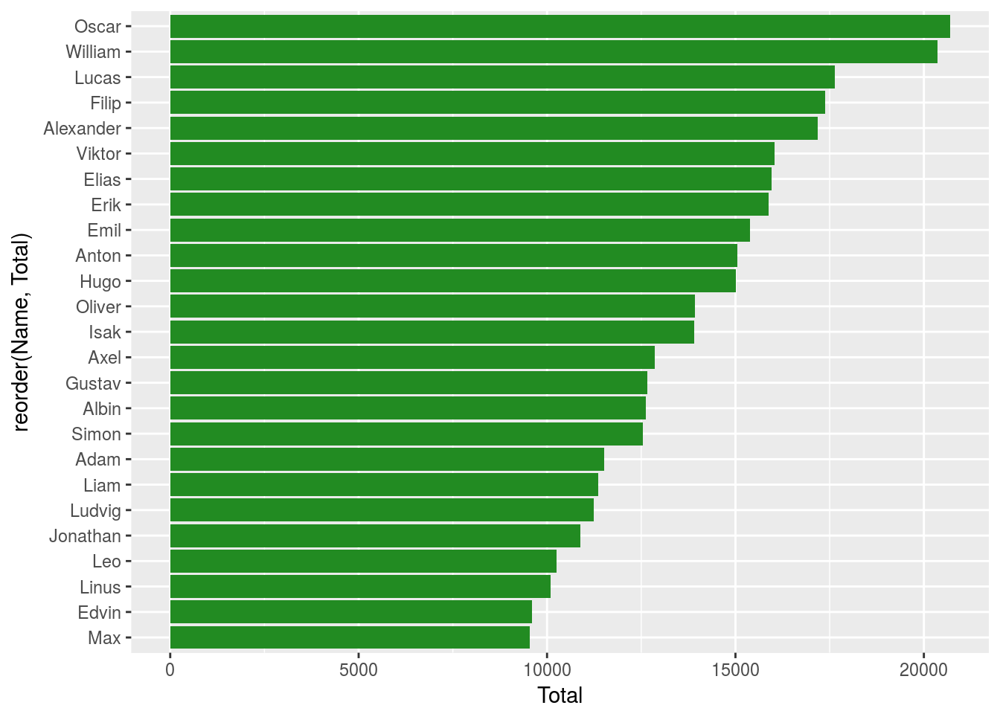
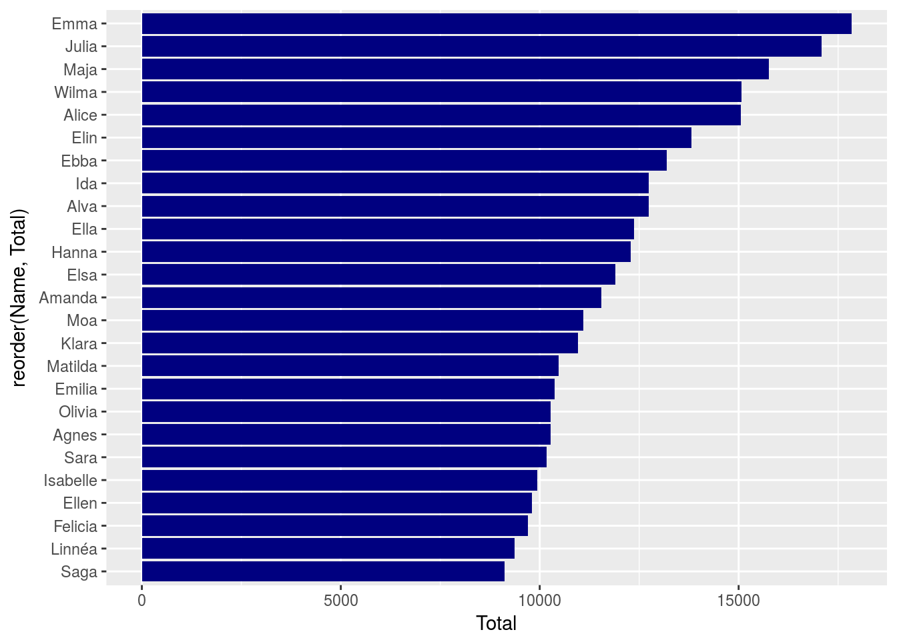
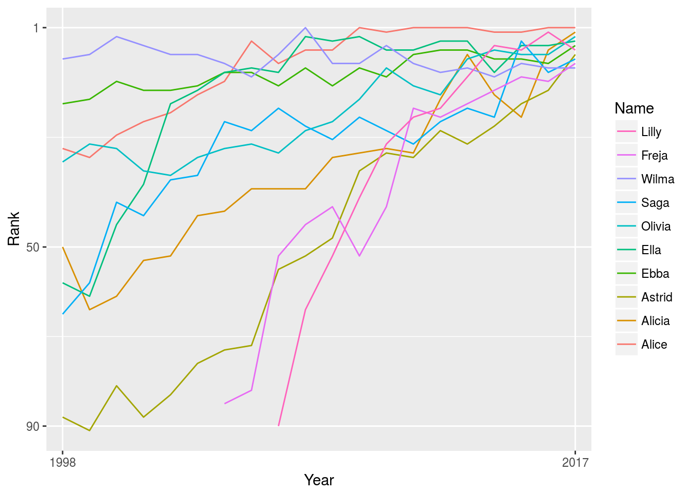

I’ve wanted to
My current research projects all use survey data so I don’t have a research-specific example to start working on. But, I have a one-and-a-half year old and when we were making our baby name list we, like everyone I think, searched online to find inspiration. So, lists of baby names, a perfect example to try my hand at url-scraping and plotting of data from the web.
library(rvest)## Loading required package: xml2library(magrittr)
library(ggplot2)
library(dplyr)##
## Attaching package: 'dplyr'## The following objects are masked from 'package:stats':
##
## filter, lag## The following objects are masked from 'package:base':
##
## intersect, setdiff, setequal, unionNext we need to define the url
url <- "https://svenskanamn.alltforforaldrar.se/namntoppen/"
year <- seq(1998, 2017, 1) %>% as.character()
url_list <- paste0(url, year)Here’s where all the work gets done. This function does all the web scraping and data arranging.
The html_nodes() code bits reference the specific part of the webpage from where text gets pulled. The SelectorGadget tool for Chrome is amazing for this if you, like me, don’t know much about webpage construction and html.
The initial text extraction is rather messy so we need to get rid of the “”, “”, and “” pieces and the white space between words with the gsub() and trimws() calls. Then drop the blank cells that appear at the bottom. Lastly, the index object identifies all of the cells which say “Namn”, they appeae at the top of each column on the webpage. And then I subset based on girls and boys names. The first nine lines of code in the function pull out the names from the table. Then I simply repeat the process to get the yearly ranking and the number of children with each name.
get_data <- function(x){
namn <- x %>% read_html() %>% html_nodes('td:nth-child(3)') %>% html_text()
namn <- gsub("\t","",namn)
namn <- gsub("\n","",namn)
namn <- gsub("\r","",namn)
namn <- trimws(namn)
namn <- namn[namn != ""]
index <- which(namn == "Namn") #to get rid of the "Namn" entries that make up the top of the columns.
flicknamn <- namn[(index[1] + 1): (index[2] - 1)]
pojknamn <- namn[(index[length(index)] + 1):length(namn)]
rank <- x %>% read_html() %>% html_nodes('td:nth-child(2)') %>% html_text()
rank <- gsub("\t","",rank)
rank <- gsub("\n","",rank)
rank <- gsub("\r","",rank)
rank <- trimws(rank)
rank <- rank[rank != ""]
index <- which(rank == "Ranking") #to get rid of the "Ranking" entries
flickrank <- rank[(index[1] + 1): (index[2] - 1)]
pojkrank <- rank[(index[length(index)] + 1):length(rank)]
antal <- x %>% read_html() %>% html_nodes('td:nth-child(4)') %>% html_text()
antal <- gsub("\t","",antal)
antal <- gsub("\n","",antal)
antal <- gsub("\r","",antal)
antal <- trimws(antal)
antal <- antal[antal != ""]
index <- which(antal == "Antal namngivna") #to get rid of the "Antal namngivna" entries
flickantal <- antal[(index[1] + 1): (index[2] - 1)]
pojkantal <- antal[(index[length(index)] + 1):length(antal)]
return(rbind(flickor = as.data.frame(cbind("Name" = flicknamn, "Rank" = flickrank, "Number" = flickantal, "Gender" = "Girl")),
pojkar = as.data.frame(cbind("Name" = pojknamn, "Rank" = pojkrank, "Number" = pojkantal, "Gender" = "Boy")))
)
}Now that I have defined the function, we need to call it. To do this we make use of lapply(). The apply functions let you call a specific function on a vector, dataframe, or list.
An alternative to this set-up in which I define a function and call lapply would be to define a for loop around the above code and loop over all of the elements in url_list. While this might be the preferred way of coding in other languages, as I understand, this generally leads to more inefficient code in R because R is designed to work with functions. This is what is meant when people say that R is a functional programming language.
name_data <- lapply(url_list, get_data)After the call to lapply() there is some final clean-up to do. lapply() returns a list of objects, in this case data frames, but they are simply named 1, 2, 3, etc. We update that quickly with the years for which we have data with the names() call. Then we loop over all observations in the datasets and create a column with the given year. We need this because in the next step I will combine the list of dataframes into a single dataframe, and we don’t want to lose from which year the name belongs (this is an example of inefficient R programming but I couldn’t figure out a better way to do it!).
After I combine the list of dataframes into a single dataframe with do.call(), I get rid of the row names, and reformat the Number and Rank columns to numeric variables. That’s it! Now we have a dataframe with a column of names, yearly rank, number of children with that name, the sex of the child, and year of birth. We can finally start visualizing our data.
names(name_data) <- year
for(i in 1:length(name_data)){
name_data[[i]]["Year"] <- year[i]
}
name_data <- do.call(rbind, name_data)
row.names(name_data) <- NULL
name_data$Number <- as.numeric(levels(name_data$Number))[name_data$Number]
name_data$Rank <- as.numeric(levels(name_data$Rank))[name_data$Rank]Which names were the most popular over the last two decades? Let’s look at the top 25 over all of the years. William, Oscar, and Liam are the most common names for Swedish boys in the last 20 years, and Alice, Alicia, and Olivia are the most popular for girls. The figures below show the most popular 25 names for boys and girls in a horizontal bar chart.
name_data %>%
dplyr::filter(Gender == "Boy") %>%
dplyr::group_by(Name) %>%
dplyr::summarise(Total = sum(Number)) %>%
arrange(desc(Total)) %>%
top_n(25, Total) %>%
ggplot() +
geom_col(aes(x = reorder(Name, Total), y = Total), fill = "forest green") +
coord_flip()
name_data %>%
dplyr::filter(Gender == "Girl") %>%
dplyr::group_by(Name) %>%
dplyr::summarise(Total = sum(Number)) %>%
arrange(desc(Total)) %>%
top_n(25, Total) %>%
ggplot() +
geom_col(aes(x = reorder(Name, Total), y = Total), fill = "navy blue") +
coord_flip()
Another question, how stable are the top names? Have Alice, Alicia, and Olivia always been popular names or were they simply really popular in some years but not at all in others? Are girls names more stable than boys?
To get an idea of this we can plot the development of names over time. Here I subset on the top-ten names from 2017 and plot they over time for girls and boys. Here are the girls.
top_girl_names <- name_data %>%
dplyr::filter(Gender == "Girl", Year == 2017) %>%
dplyr::group_by(Name) %>%
dplyr::summarise(Total = sum(Number)) %>%
arrange(desc(Total)) %>%
top_n(10, Total)
name_data[which(name_data$Name %in% unique(top_girl_names$Name)),] %>%
ggplot(aes(x = Year, y = Rank, col = Name, group = Name)) +
geom_line() +
guides(color = guide_legend(reverse = T)) +
scale_y_reverse(breaks = c(1,100)) +
scale_x_discrete(breaks = c(1998,2017))And the boys:
top_boy_names <- name_data %>%
dplyr::filter(Gender == "Boy", Year == 2017) %>%
dplyr::group_by(Name) %>%
dplyr::summarise(Total = sum(Number)) %>%
arrange(desc(Total)) %>%
top_n(10, Total)
name_data[which(name_data$Name %in% unique(top_boy_names$Name)),] %>%
ggplot(aes(x = Year, y = Rank, col = Name, group = Name)) +
geom_line() +
guides(color = guide_legend(reverse = T)) +
scale_y_reverse(breaks = c(1,50, 90)) +
scale_x_discrete(breaks = c(1998,2017))
Boys names seem to be much more consistent than girls. All but two of the boys names, Liam and Noah, have been quite popular throughout the entire period placing among the top 50 names in each year, but all ten names were ranked in every year of the data. And at the top there are a lot of nearly horizontal trend lines among the most popular names. For the girls though, there is much more movement. 6 names were outside of the top 50 at the beginning of the period, and two names weren’t even ranked until later dates. We also don’t see the same consistency in the top names - nearly all of the names seem to be trending upwards as we move to the right in the figure. The popular boys names of 2017 have been consistently popular throughout the last 20 years whereas the popular girls names of 2017 seem have gained their popularity more recently.